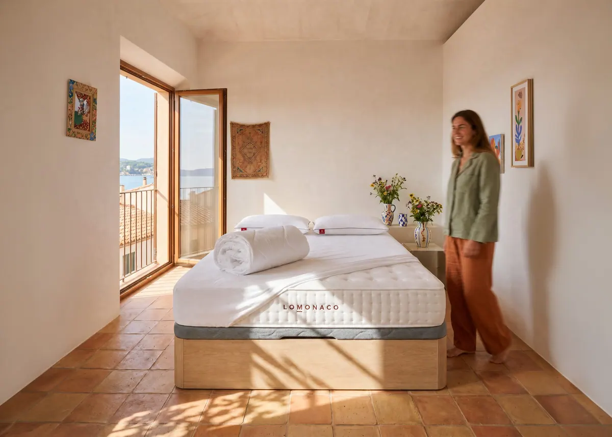
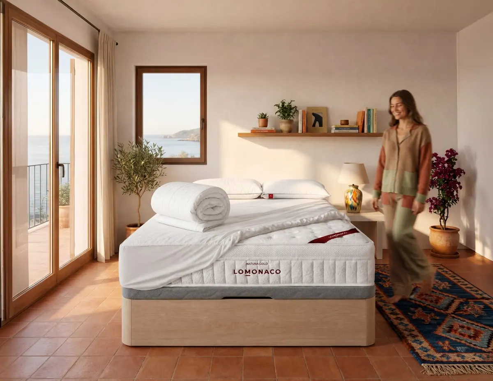
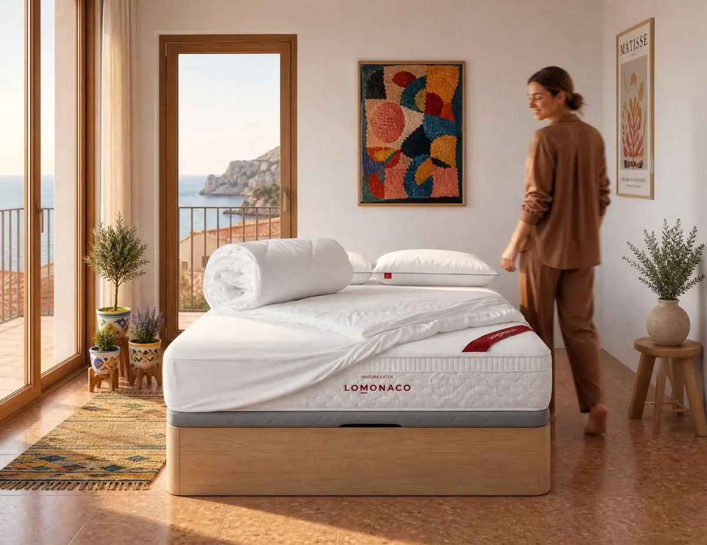
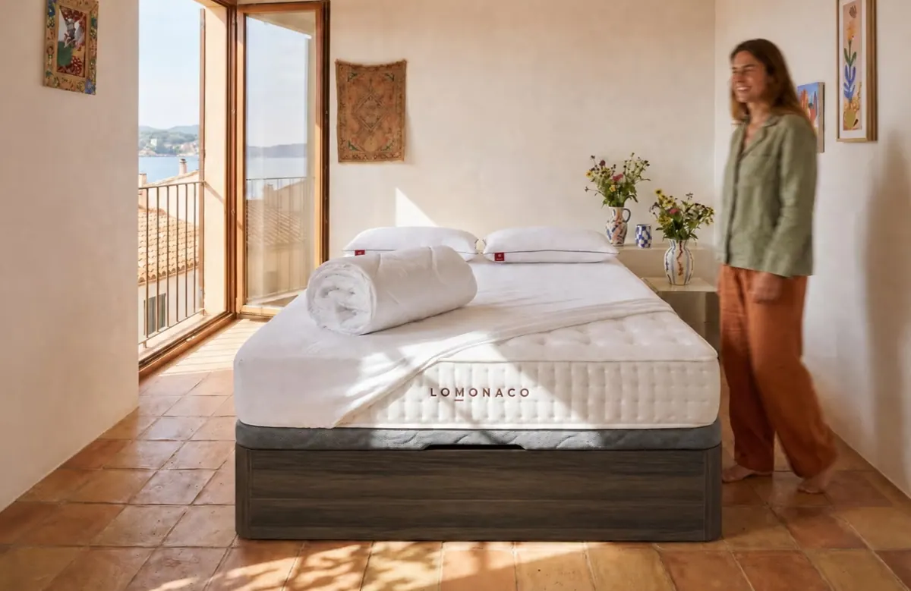
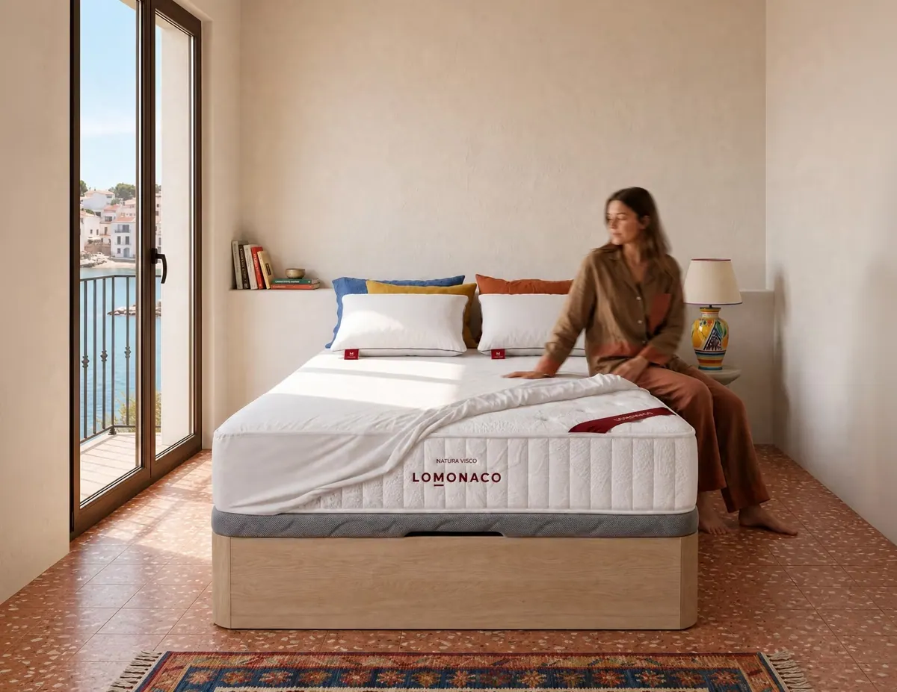

Colchón y canapé a juego: cómo acertar con el equipo completo

Cuando toca renovar la cama, la pregunta casi siempre es la misma: ¿cambio solo el colchón o también la base? En esta guía te explicamos cuándo merece la pena comprar colchón y canapé juntos, cómo acertar con la combinación y qué incluyen nuestros packs de colchón y canapé.
Respuesta rápida
Sí merece la pena comprar colchón y canapé juntos si tu base tiene más de ocho o diez años, está hundida o no es la adecuada para tu nuevo colchón. Ventajas:
- Encajan a la primera: misma medida y un apoyo pensado para ese colchón.
- Una sola entrega: te lo llevamos y montamos todo el mismo día.
- Sale más a cuenta: en la mayoría de nuestros packs pagas el colchón y el canapé, y las almohadas, el protector y el edredón van de regalo.
¿Merece la pena comprar colchón y canapé juntos?
Sí, en tres casos: cuando la base actual está vieja o hundida, cuando vas a cambiar de medida y cuando quieres ganar almacenaje. Si tu base está en buen estado y es firme y plana, puedes cambiar solo el colchón.
Un colchón nuevo sobre una base cansada pierde buena parte de sus ventajas: si el somier o el canapé está combado, el colchón acabará copiando esa forma y se deformará antes de tiempo. Por eso, cuando la base tiene más de ocho o diez años, lo recomendable es cambiar las dos piezas a la vez.
Cambia colchón y canapé si…
- Tu base tiene más de 8–10 años
- Notas hundimientos o láminas rotas
- Vas a pasar a una cama más grande
- Te falta espacio de almacenaje
Cambia solo el colchón si…
- Tu base es firme, plana y está en buen estado
- Mantienes la misma medida
- Ya tienes un canapé o una base tapizada reciente
- El presupuesto no da para las dos piezas
¿Cualquier colchón vale para un canapé?
Sí. Un canapé abatible da un apoyo firme y plano que funciona con colchones viscoelásticos, de látex y de muelles ensacados. Lo que hay que cuidar es que tengan la misma medida y que el sistema de apertura del canapé esté preparado para el peso del colchón.
Al comprar colchón y canapé juntos te aseguras de que encajan en tres cosas:
- MedidaLos dos son exactamente de la misma medida, sin holguras ni bordes que sobresalgan.
- Peso y aperturaLa tapa sube y baja sin esfuerzo con ese colchón encima. Un colchón muy pesado o muy ligero cambia cómo abre el canapé.
- Altura totalNuestro canapé mide 32 cm; con nuestros colchones, la cama queda a una altura cómoda para sentarse y levantarse.
Si quieres conocer a fondo el canapé, en nuestra guía del canapé abatible tienes su capacidad, su altura y cómo debe abrir.
¿Qué colchón y qué canapé combinar?
El canapé es el mismo para todos los colchones; lo que cambia es el colchón, y se elige por tu peso, tu postura y si duermes en pareja. El color del canapé se elige por el dormitorio: blanco, nórdico, nogal o roble.
| Si buscas… | Colchón del pack | Por qué |
|---|---|---|
| Equilibrio y dormir en pareja | Natura Gold | Muelles ensacados con viscoelástica, firmeza media-firme e independencia de lechos. |
| Adaptación y frescor | Natura Látex | Látex sobre muelles ensacados: muy adaptable y transpirable. |
| Máxima acogida | Gran Natura | Núcleo 100% látex, el más adaptable de nuestro catálogo. |
| Firmeza y mejor precio | Natura Visco | Viscoelástica sobre núcleo HR, firmeza media-alta. |
Si dudas entre dos, nuestra guía sobre la firmeza del colchón te ayuda a decidir según tu peso y tu postura.
¿Qué incluyen los packs LOMONACO?
Tenemos packs de colchón con canapé abatible de madera y packs de colchón con base tapizada antideslizante. Los packs con canapé de Natura Gold, Natura Látex y Gran Natura incluyen de regalo almohadas, protector de colchón impermeable y edredón nórdico verano e invierno.
| Pack con canapé | Natura Gold | Natura Látex | Gran Natura | Natura Visco |
|---|---|---|---|---|
| Colchón | Incluido | Incluido | Incluido | Incluido |
| Canapé abatible | Incluido | Incluido | Incluido | Incluido |
| Almohadas | De regalo | De regalo | De regalo | Incluidas |
| Protector impermeable | De regalo | De regalo | De regalo | Incluido |
| Edredón verano e invierno | De regalo | De regalo | De regalo | No incluye |
| Medidas | 11 | 11 | 11 | 11 |
Contenido de cada pack según su ficha a 29 de octubre de 2026. El canapé, en cuatro acabados: blanco, nórdico, nogal y roble.
El más completo
Natura Gold + canapé
- Muelles ensacados y viscoelástica
- Almohadas, protector y edredón de regalo

Natura Látex + canapé
- Látex sobre muelles ensacados
- Almohadas, protector y edredón de regalo

Gran Natura + canapé
- Núcleo 100% látex
- Almohadas, protector y edredón de regalo

Natura Visco + canapé
- Viscoelástica sobre núcleo HR
- Con almohadas y protector
Si no necesitas almacenaje, también tenemos los cuatro colchones en pack con base tapizada antideslizante, más ligera y económica que el canapé.
¿Cuánto se ahorra con un pack de colchón y canapé?
En los packs con canapé de Natura Gold, Natura Látex y Gran Natura, el precio del pack es el mismo que pagarías por el colchón y el canapé por separado. Lo que te ahorras son las almohadas, el protector impermeable y el edredón nórdico, que van de regalo y suman más de 250 € incluso en la medida más pequeña.
- 0 €de más frente a comprar colchón y canapé por separado, en los packs de Natura Gold, Natura Látex y Gran Natura
- +250 €en almohadas, protector y edredón de regalo
- 1sola entrega y montaje para todo el equipo
Comparación con los precios de nuestra web a 29 de octubre de 2026. El valor de los regalos se calcula con los precios de venta por separado de la almohada, el protector y el edredón en su medida más pequeña.
Además, puedes pagar el pack a plazos: tenemos colchones financiados hasta en 36 cuotas, con opción de 12 meses sin intereses.
Configura tu pack con un Asesor del Descanso
Cuéntanos tu peso, tu postura, la medida de tu cama y el color de tu dormitorio, y te proponemos el colchón y el canapé que mejor encajan. Es gratis y sin compromiso.
Hablar con un asesorVer packs de colchón y canapé¿Cómo es la entrega y la retirada del colchón y el canapé antiguos?
Te llevamos el colchón y el canapé a casa y te montamos el canapé sin coste. Si quieres que nos llevemos tu colchón y tu base antiguos, solo tienes que añadir el servicio de recogida al hacer el pedido.
- Elige pack, medida y acabadoEl colchón, la medida de tu cama y el color del canapé: blanco, nórdico, nogal o roble.
- Añade la recogida si la necesitasPuedes añadir el servicio de recogida de tu colchón y tu base antiguos al hacer el pedido.
- Recibe y montaTe llevamos todo a casa y montamos el canapé. Las medidas de 180×200 y 200×200 llegan en dos piezas para que entren sin problemas.
- Prueba tu colchónTienes 14 noches de prueba para comprobar que el colchón es el adecuado para ti.
Elige tu canapé por medida
Canapé 90×190 Canapé 90×200 Canapé 105×190 Canapé 105×200 Canapé 135×180 Canapé 135×190 Canapé 150×190 Canapé 150×200 Canapé 160×200 Canapé 180×200 Canapé 200×200
Nuestra recomendación
Si tu base tiene más de ocho o diez años o vas a cambiar de medida, compra colchón y canapé juntos: encajan a la primera, llegan en una sola entrega y, en nuestros packs de Natura Gold, Natura Látex y Gran Natura, te llevas las almohadas, el protector y el edredón sin pagar más. Si tu base está en buen estado, cambia solo el colchón y elige entre nuestros colchones.
Preguntas frecuentes sobre comprar colchón y canapé
¿Merece la pena comprar colchón y canapé juntos?
Sí, si tu base tiene más de ocho o diez años, está hundida o vas a cambiar de medida. Colchón y canapé encajan a la primera, llegan en una sola entrega y, en pack, suelen salir más a cuenta que por separado.
¿Qué incluye un pack de colchón y canapé de LOMONACO?
El colchón y el canapé abatible de madera en la medida y el acabado que elijas. En los packs de Natura Gold, Natura Látex y Gran Natura se incluyen de regalo almohadas, protector de colchón impermeable y edredón nórdico verano e invierno.
¿Cualquier colchón vale para un canapé abatible?
Sí. El canapé da un apoyo firme y plano que funciona con colchones viscoelásticos, de látex y de muelles ensacados. Solo hay que comprobar que tienen la misma medida y que la apertura está preparada para el peso del colchón.
¿Cada cuánto hay que cambiar el canapé?
Un canapé de madera de calidad dura muchos años, pero conviene revisarlo cuando cambias de colchón. Si tiene más de ocho o diez años, hundimientos o la apertura ya no funciona bien, es buen momento para cambiarlo junto al colchón.
¿Os lleváis el colchón y la base antiguos?
Sí. Al hacer el pedido puedes añadir el servicio de recogida de colchón y base, y nos encargamos de retirarlos.
Completa tu cama
Fuentes
- Fichas y precios de los packs de colchón y canapé, del canapé abatible de madera y de los colchones Natura Gold, Natura Látex, Gran Natura y Natura Visco de LOMONACO (consultados el 29 de octubre de 2026).
- Experiencia del equipo de Asesores del Descanso de LOMONACO con las consultas sobre packs.